はじめに
名刺管理君は、スマホで名刺を撮るだけで、名前・会社・電話番号などを読み取って会社の名刺台帳に登録するアプリです。登録した名刺は、同じ会社の社員だけが見られます。ほかの会社の人や、Kamo's BASE（提供元）は見られません。
名刺の台帳と画像は、御社の Google Workspace の中（共有ドライブ）に保存されます。この手順書では、Google Workspace を契約していない状態から、社員のスマホで使い始めるまでを順に説明します。
用意するもの
- パソコン（手順1〜9はパソコンで行います）
- 会社のドメイン（例：
example.co.jp）。持っていない場合は、手順1の申し込みの途中で取得できます - クレジットカード（Google Workspace と Gemini API の支払いに使います）
- Kamo's BASE からお渡しする「プログラムのコピー用リンク」
- 社員のスマホ（iPhone または Android）
かかる費用
| 何の費用 | 支払い先 | 目安 |
|---|---|---|
| Google Workspace | Business Starter の年間プランで、1人あたり月800円（税別）。名刺管理君はこのプランで使えます。14日間の無料試用があります | |
| Gemini API（名刺の読み取り・AIに相談） | 前払い制で、最初に5ドル（約750円）以上を入金します。名刺1枚の読み取りは1円未満の見込みです（Google の公開料金からの試算） | |
| 独自ドメイン（持っていない場合） | 申し込みの途中で購入（販売元は Squarespace） | 1年分の料金を購入時に払います。金額は購入画面に出ます |
上の金額は 2026年10月28日に各社の公式ページで確かめたものです。料金は変わることがあるので、申し込む前に Google Workspace の料金ページ などで最新の金額を確かめてください。
作業の流れ
1. Google Workspace を申し込む
Google Workspace は、会社のメールアドレス（例：yamada@example.co.jp）で使える Google の有料サービスです。名刺管理君は、Google Workspace の共有ドライブとスプレッドシートに名刺を保存します。
- パソコンで Google Workspace の申し込みページ を開きます。
- 会社名 を入れ、自分を含む従業員の数 を選び、地域 が 日本 になっていることを確かめて、次へ を押します。
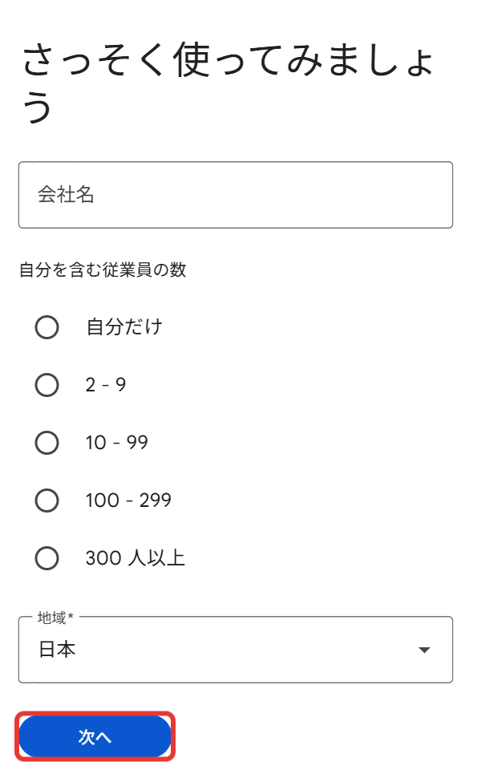
- このあとは画面の案内に沿って、連絡先、ドメイン、管理者のアカウント（ユーザー名とパスワード）、支払い情報を入れます。
- ドメイン：会社のドメインを持っていれば、それを入れます。持っていなければ、その場でドメインを購入できます。
- 管理者のアカウント：ここで作るアカウントが、この手順書でいう「代表アカウント」です。
- プラン：Business Starter で使えます。
・すでに持っているドメインを使う場合：そのドメインが御社のものであることの証明が必要です。Google の設定画面に出る確認用の文字列を、ドメインを買った会社の設定画面に登録します。申し込んだら、早めに済ませてください。
詳しくは Google のヘルプ 申し込み時にドメインを購入する・ドメインの所有権を証明する を見てください。
@gmail.com）でも申し込めますが、その場合は1人でしか使えず、社員を追加できません。名刺管理君を会社で使うには、会社のドメインで申し込んでください。
2. 社員のアカウントを作る
名刺管理君を使う社員ごとに、会社のメールアドレス（例：suzuki@example.co.jp）を作ります。
- パソコンで 管理コンソールのユーザー一覧 を開きます（代表アカウントでログイン）。
- 新しいユーザーの追加 を押します。
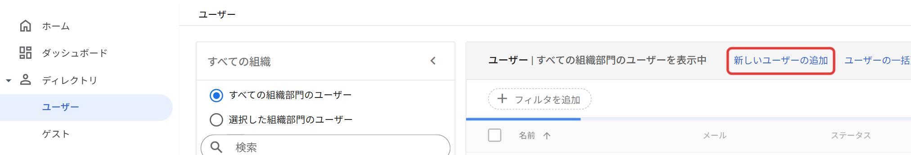
管理コンソール ＞ ディレクトリ ＞ ユーザー - 姓名メインのメールアドレス を入れ、新しいユーザーの追加 を押します。
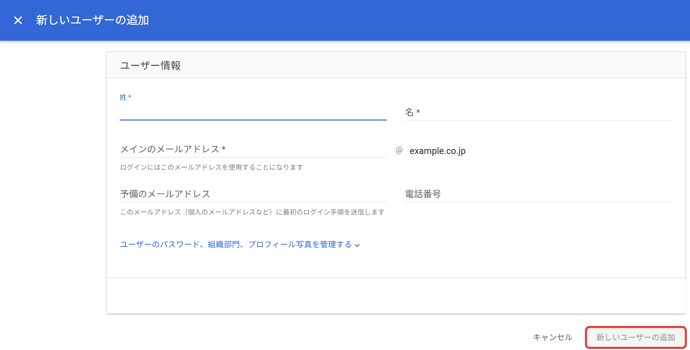
@ の右には御社のドメインが出ます - 追加が終わると、ログインの案内の画面が出ます。パスワードをコピー で控えて本人に伝えるか、プレビューして送信 で本人のメールに送り、完了 を押します。
3. 共有ドライブ・フォルダ・スプレッドシートを作る
名刺の台帳（スプレッドシート）と画像を入れる場所を作ります。共有ドライブに入れたものは、メンバーに加えた社員全員が見られます。
3-1. 共有ドライブを作る
- パソコンで Google ドライブの共有ドライブ を開き、左上の 新規 を押します。
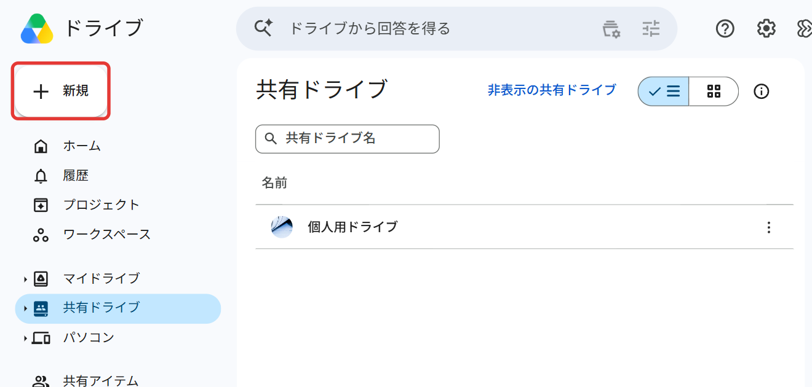
- 名前に
名刺管理と入れ、作成 を押します。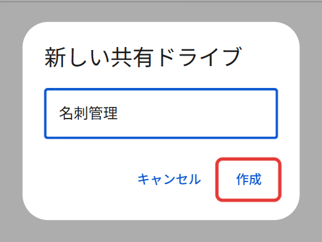
3-2. 社員をメンバーに加える
- 作った共有ドライブを開き、メンバーを管理 を押します。
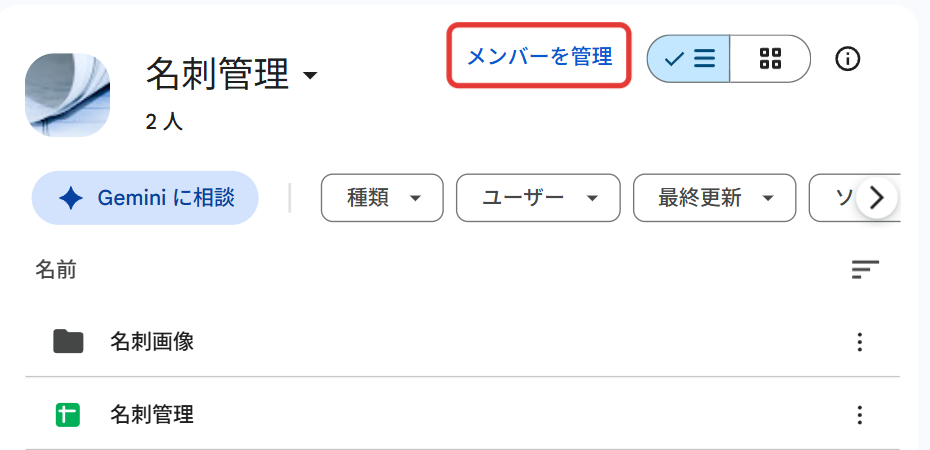
- ユーザーやグループを追加 に社員のメールアドレスを入れ、送信 を押します。権限は最初に選ばれているもの（コンテンツ管理者）のままでかまいません。
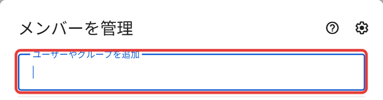
3-3. フォルダとスプレッドシートを作る
- 共有ドライブ
名刺管理を開いたまま、新規 ＞ 新しいフォルダ で、名刺画像という名前のフォルダを作ります。 - 同じく 新規 ＞ Google スプレッドシート ＞ 空白のスプレッドシート で、スプレッドシートを作ります。名前は
名刺管理にします（ほかの名前でもかまいません）。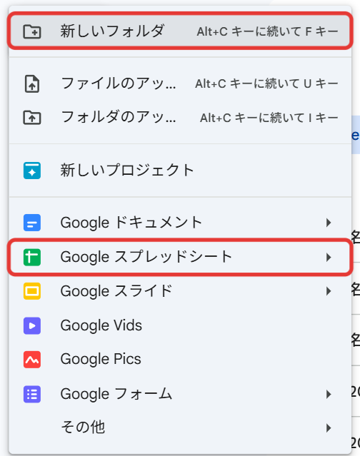
3-4. IDを控える
手順6で使うため、スプレッドシートとフォルダの「ID」を控えます。IDは、開いたときのブラウザのアドレス欄に入っている英数字です。黄色の部分をコピーして、メモ帳などに貼っておいてください。
スプレッドシートのID（スプレッドシートを開いたときのアドレス）
フォルダのID（フォルダ 名刺画像 を開いたときのアドレス）
上の英数字は例です。御社のものは、文字も長さも違います。
3-5. 社外の人と共有できないようにする（おすすめ）
社員がうっかり名刺の台帳や画像を社外の人と共有しないよう、会社全体で社外への共有を止めておきます。
- 管理コンソール を開き、アプリ ＞ Google Workspace ＞ ドライブとドキュメント を開きます。
- 共有設定 の 共有オプション で、社外との共有を オフ にして保存します。
詳しくは Google のヘルプ 組織の外部共有を管理する を見てください。社外の取引先とドライブでファイルを共有している場合は、オフにすると共有できなくなるので、社内で相談してから決めてください。
4. Gemini の API キーを作る
名刺の文字の読み取りと「AIに相談」には、Google の AI（Gemini）を使います。使うための鍵（API キー）を、代表アカウントで作ります。
4-1. API キーを作る
- 代表アカウントでログインしたまま、Google AI Studio の API キーのページ を開きます。
- 右上の API キーを作成 を押します。
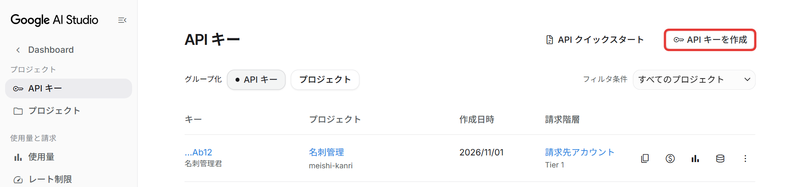
一覧の行は例です - キー名の設定 に
名刺管理君と入れ、キーを作成 を押します。インポートしたプロジェクトを選択 は、最初に選ばれているままでかまいません。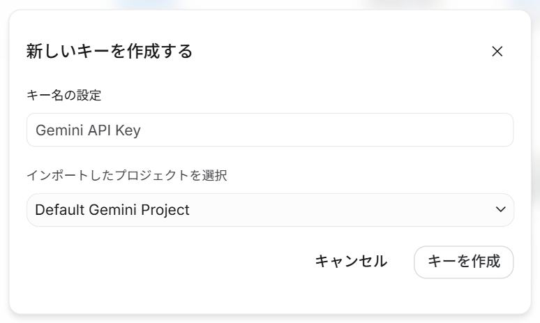
- 一覧に増えたキーの行で、右側の四角が2つ重なったアイコン（API キーのコピー）を押すと、キーがコピーされます。メモ帳などに貼って控えます（手順6で使います）。
4-2. 有料枠にする（必ず行ってください）
一覧の 請求階層 の欄を見ます。Tier 1 などと出ていれば、有料枠になっています。無料枠のままになっている場合は、その欄から支払い方法を登録します。最初に5ドル（約750円）以上を前払いします。
5. プログラムをコピーする
- 代表アカウントでログインしたまま、Kamo's BASE からお渡しした「プログラムのコピー用リンク」を開きます。
- プロジェクトの詳細 の画面が開きます。右上の コピーを作成（四角が2つ重なった形のボタン）を押します。別の画面が開いたときは、左の 概要（ⓘ のアイコン）を押すと、この画面になります。
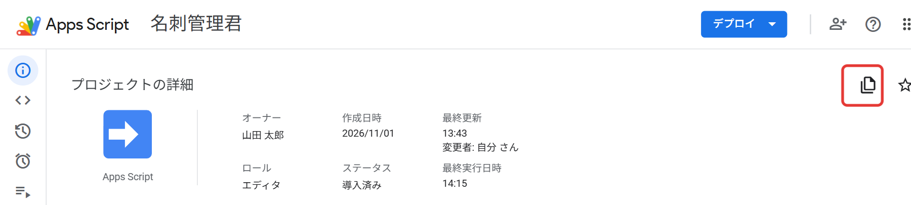
- コピーが開きます。左上の名前を押すと、名前を変えられます。
名刺管理君にしておくとわかりやすいです。
6. プログラムに設定を入れる
手順3・4で控えた値を、プログラムに登録します。
- コピーしたプログラムの画面で、左の歯車 プロジェクトの設定 を押します。
- 下の方の スクリプト プロパティ で、スクリプト プロパティを追加 を押し、次の5つを1つずつ入れます。プロパティ に左の名前を、値 に右の値を入れます。
| プロパティ | 値 |
|---|---|
GEMINI_API_KEY | 手順4で作った API キー |
SPREADSHEET_ID | 手順3-4で控えたスプレッドシートのID |
DRIVE_FOLDER_ID | 手順3-4で控えたフォルダのID |
GOOGLE_CLIENT_ID | 456836034516-dsddn674o4pv00tng23rj3h22c3u7oaa.apps.googleusercontent.com（全社共通の値です。このままコピーしてください） |
ALLOWED_DOMAIN | 御社のドメイン（例：example.co.jp）。ここに書いたドメインのアカウントだけがログインできます |
- 5つ入れたら、スクリプト プロパティを保存 を押します。押し忘れると、入れた値が消えます。
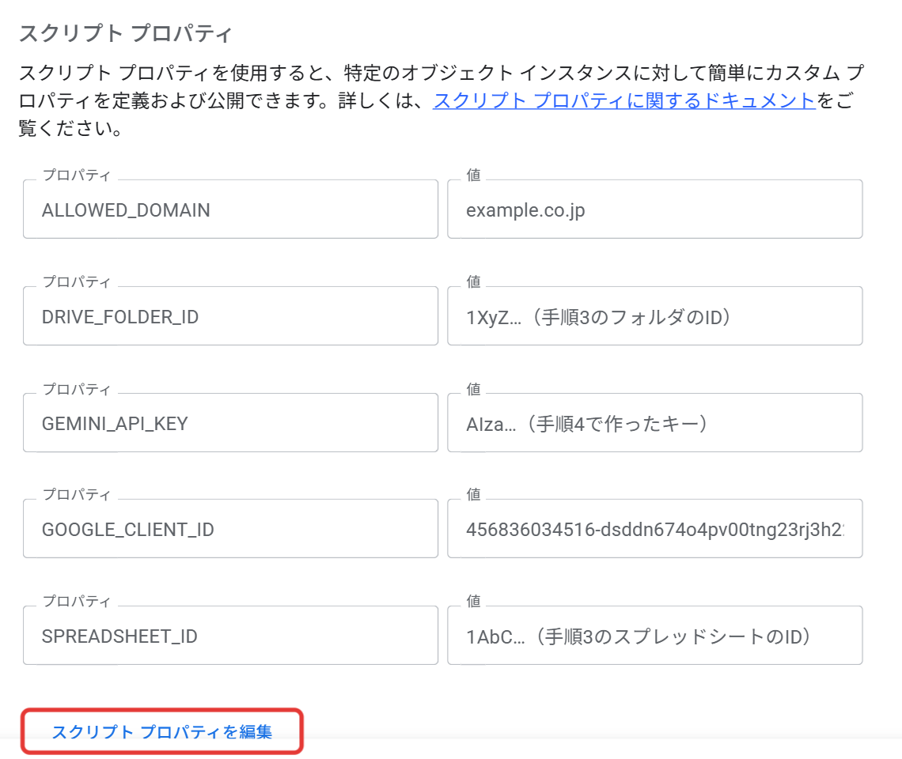
保存したあとの画面（値は例です）。直すときは スクリプト プロパティを編集 を押します
7. 台帳の見出しを作る（初回の承認）
プログラムを一度動かして、スプレッドシートに見出しの行を作ります。このとき、プログラムがドライブや連絡先を使うことを、代表アカウントで許可します。
- 左の <>（エディタ）を押し、ファイルの一覧から
main.gsを押します。 - 上の関数の選択欄で
setupを選び、実行 を押します。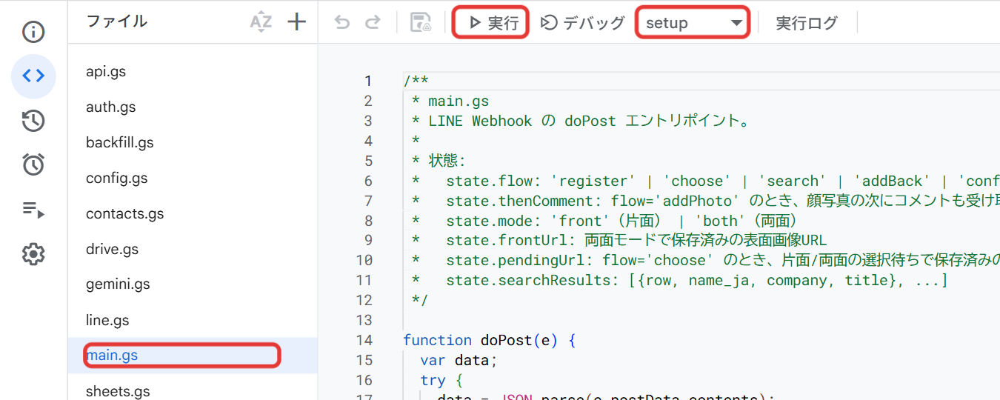
- 初めて実行するときは、プログラムがドライブ・スプレッドシート・連絡先などを使ってよいか、許可を求める画面が出ます。代表アカウントを選び、内容を確かめて許可します。許可は最初の1回だけです。
- 下に 実行ログ が開き、
setupSheet: ヘッダー行を作成/更新しました。と出たら完了です。スプレッドシートの1行目に「登録日時」「名前(日本語)」などの見出しが入ります。
8. アプリとして公開する
- 右上の デプロイ ＞ 新しいデプロイ を押します。
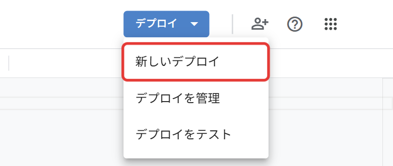
- 次のようになっているか確かめて、デプロイ を押します。
- 種類の選択：ウェブアプリ（出ていなければ、歯車を押して選びます）
- 次のユーザーとして実行：自分（代表アカウント）
- アクセスできるユーザー：全員
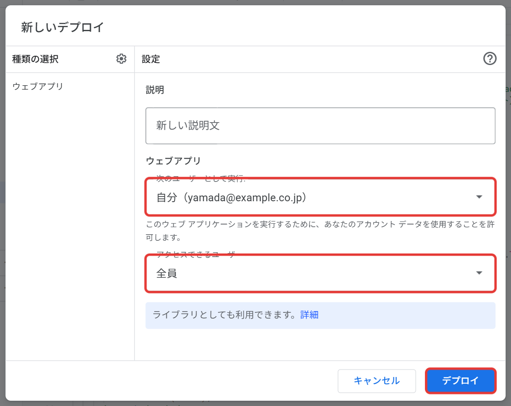
- 許可を求める画面が出たときは、手順7と同じように許可します。
- 表示された ウェブアプリ の URL（
https://script.google.com/macros/s/…/exec）をコピーして控えます。手順9でも使います。 - 左の歯車 プロジェクトの設定 を押し、スクリプト プロパティを編集 ＞ スクリプト プロパティを追加 で、次の1つを足して スクリプト プロパティを保存 を押します。
これを入れるまでは、だれもログインできません。プログラムは、ログインがこの URL あてに行われたものかを確かめます（ほかの人が用意した偽の接続先でログインさせられても、その情報を御社のプログラムで使わせないため）。
プロパティ 値 API_URLいまコピーしたウェブアプリの URL（ https://script.google.com/macros/s/…/exec）
9. 社員に配るリンクを作る
次のURLの ここにウェブアプリのURL の部分を、手順8で控えたURLに置き換えます。これが「設定用リンク」です。社員にメールやチャットで送ります。
例：
10. スマホに入れてログインする
ここからは、名刺管理君を使う社員それぞれが、自分のスマホで行います。
- 手順9の「設定用リンク」を、スマホで開きます。iPhone は Safari、Android は Chrome で開いてください。ログイン の画面が出ます。
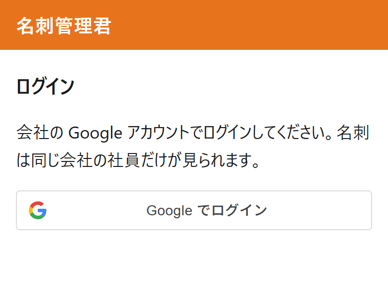
- ログインする前に、この画面をホーム画面に追加します。
- iPhone（iOS 26）：Safari の その他 ボタン ＞ 共有 を押し、下へ動かして ホーム画面に追加 を押します。Webアプリとして開く をオンにして、追加 を押します。
- iPhone（iOS 27）：iOS 26 とほぼ同じです。ボタンの名前が ページメニュー、スイッチの名前が ウェブアプリとして開く に変わっています。
- iPhone（iOS 18）：Safari の共有ボタン（四角から上向きの矢印が出ている形）を押し、下へ動かして ホーム画面に追加 を押します。
- Android：Chrome の右上の︙（縦に点が3つ）を押し、メニューからホーム画面に追加する項目を選びます。
- ホーム画面に増えた 名刺管理君 のアイコンから開き、Google でログイン を押して、会社のアカウント（手順2で作ったもの）でログインします。
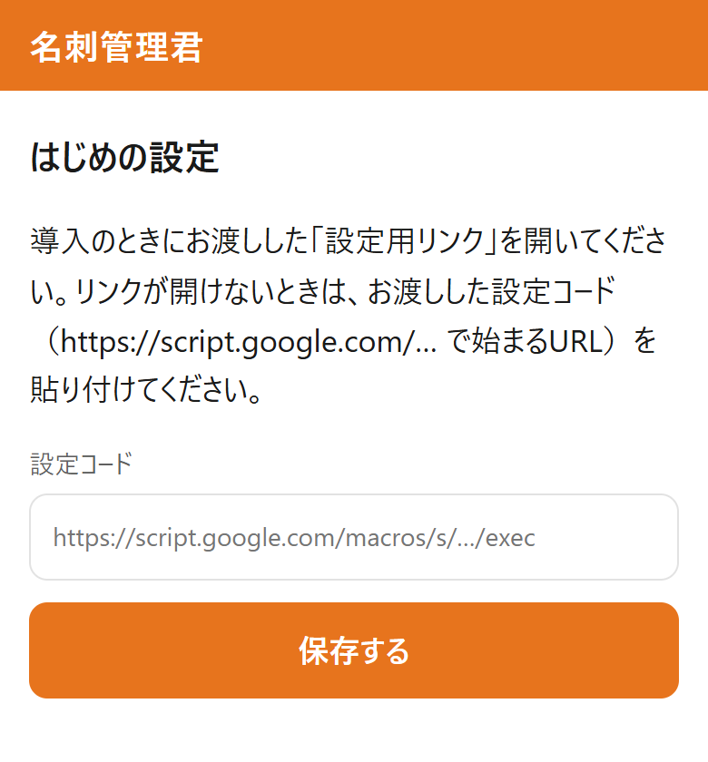
11. 使い方
名刺を1枚登録する
- 登録 を押し、片面（表だけ）か 両面（表と裏）を選びます。
- 表面を撮る（両面なら 裏面を撮る も）を押して名刺を撮り、登録する を押します。
- 読み取った内容が出たら完了です。続けて 顔写真を追加 や コメントを追加 もできます。
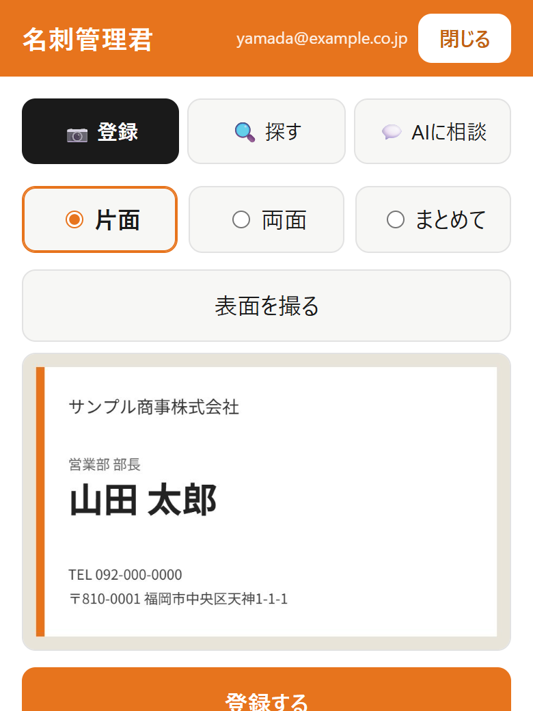
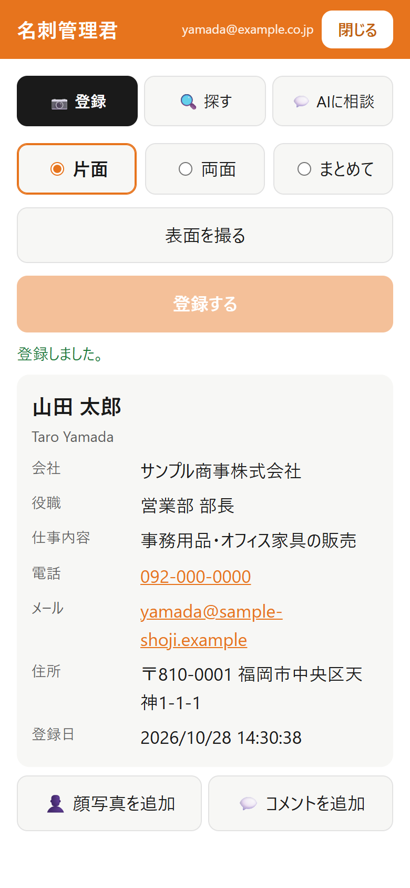
名刺をまとめて登録する
交流会などで名刺がたくさんあるときに使います。全部の名刺に同じコメント（例：「守成クラブ 例会で名刺交換」）を付けられます。
- まとめて を選び、📷 1枚目の表を撮る を押します。
- 表を撮ると、表の右に 📷 裏を撮る、下に 📷 次の名刺（2枚目）の表を撮る が出ます。裏がある名刺は裏を撮り、なければ次の名刺へ進みます。
- 全部撮ったら、必要ならコメントを書き、まとめて登録する を押します。
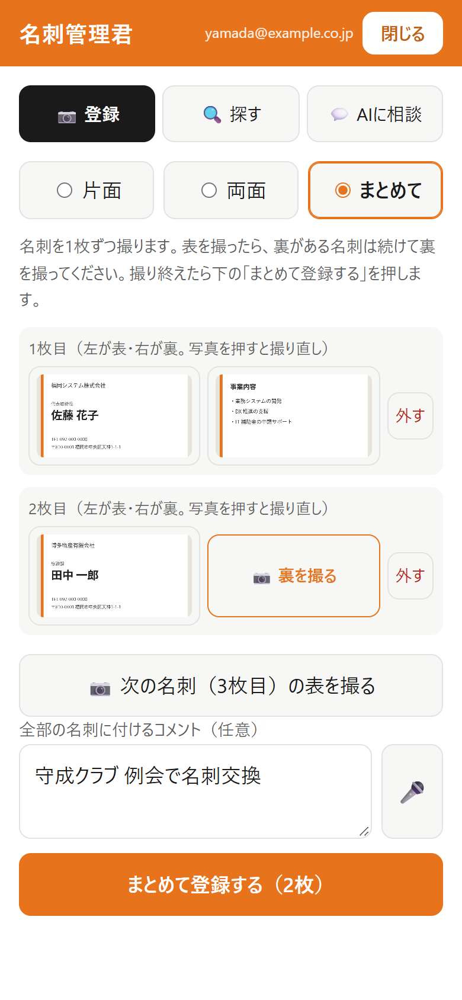
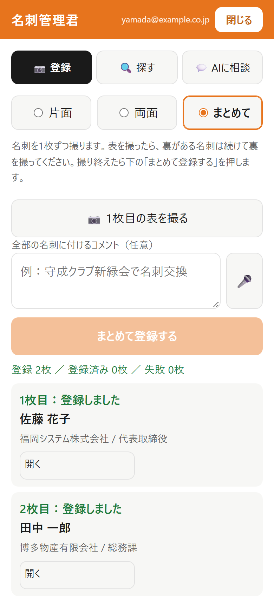
すでに登録してある名刺（名前と会社名が同じもの）は、二重に登録されず「登録済みの名刺でした」と出ます。
名刺を探す
- 探す を押し、探す項目（名前・会社・フリー）にチェックを入れます。
- 言葉を入れて 探す を押します。🎤 を押すと、声でも入れられます。
- 出てきた名刺を押すと、詳しい内容と名刺の画像が見られます。
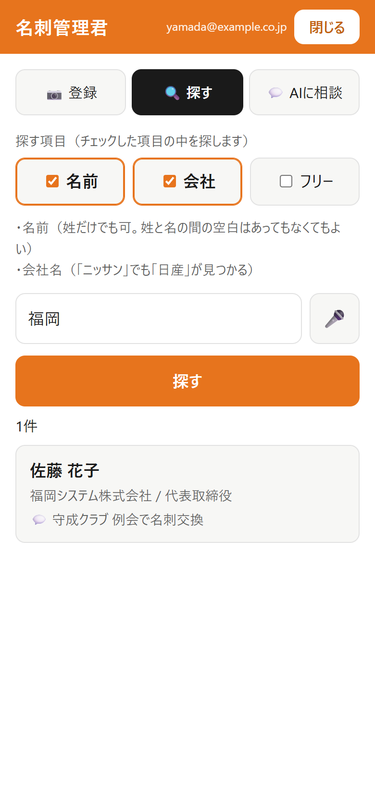
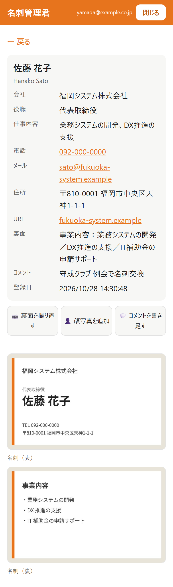
AIに相談する
やりたいことを文章で書くと、登録した名刺の中から合いそうな会社・人を選びます。判断の材料は、名刺とコメントに書いてあることだけです。
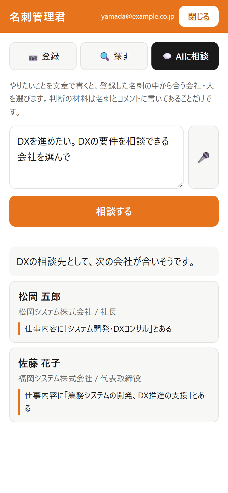
使い終わったら
右上の 閉じる を押すとログアウトし、画面の名刺も消えます。スマホを人に渡すときなどに使ってください。次に開いたときは、ログインからになります。
12. 困ったとき
| こんなとき | 確かめること |
|---|---|
| アプリを開くと はじめの設定 が出る | 設定用リンクから開き直してください（手順10）。 |
ログインを確認できませんでした。 と出る | 会社のアカウント（手順2で作ったもの）でログインしているか確かめてください。代表者は、手順6の ALLOWED_DOMAIN が御社のドメインと同じつづりか確かめてください。 |
E004: 名刺情報の読み取りに失敗しました。 と出る | 明るい場所で、名刺が画面いっぱいに写るように撮り直してください。何度撮っても出る場合は、代表者が手順4の API キーと前払いの残高を確かめてください。 |
E002: 同じ名刺がすでに登録されています。 と出る | 名前と会社名が同じ名刺が、すでに登録されています。登録済みの名刺を開く で中身を見られます。 |
E005: スプレッドシートへの書き込みに失敗しました。 と出る | 代表者が、手順6の SPREADSHEET_ID と、手順7（setup の実行）が済んでいるかを確かめてください。 |
E003: 画像の保存に失敗しました。 と出る | 代表者が、手順6の DRIVE_FOLDER_ID を確かめてください。フォルダが共有ドライブの中にあり、代表アカウントがその共有ドライブのメンバーである必要があります。 |
E012: AIを使う機能（登録・検索・相談・声の入力）の1日の利用回数の上限に達しました。 と出る | 使いすぎで料金が増えないよう、AIを使う機能は1人1日300回・会社全体で1日3000回までにしています。時間をおいてお試しください。 |
名刺の画像を開くと 名刺の画像の保存先にないファイルです と出る | スプレッドシートの 画像(表) 画像(裏) 顔写真 の列が書き換えられています。アプリは、手順3の画像フォルダ（またはその共有ドライブ）の中の画像だけを開きます。共有ドライブの中に、一部の社員しか開けないフォルダを作らないでください（アプリからは、社員全員がその共有ドライブの画像を開けます）。代表者が、その行の画像の列を確かめてください。 |
| アプリを開くと このリンクの接続先（会社の名刺管理君）を使いますか？ または 接続先（会社の名刺管理君）を切り替えますか？ と出る | 設定用リンクから開いたときに出ます。代表者から受け取ったリンクのときだけ OK を押してください。心当たりがなければ キャンセル を押し、代表者に知らせてください。 |
この名刺管理君の接続先を確かめられません と出る | 代表者が、手順8の API_URL を入れて保存したか確かめてください。 |
この名刺管理君あてのログインではありません と出る | アプリを開き直して、もう一度ログインしてください。続くときは、代表者が手順8の API_URL が、社員に配った設定用リンクの URL（?api= の後ろ）と同じか確かめてください。 |
エラーに ScriptProperty "…" が設定されていません。 と出る | 手順6で、その名前のスクリプト プロパティが抜けています。入れて スクリプト プロパティを保存 を押してください。 |
| スクリプト プロパティを直したあと | 直した値は、保存した時点から効きます。もう一度デプロイ（手順8）する必要はありません。 |
上で解決しないときは、表示された文章（[原因] の行を含む）を控えて、Kamo's BASE にお問い合わせください。